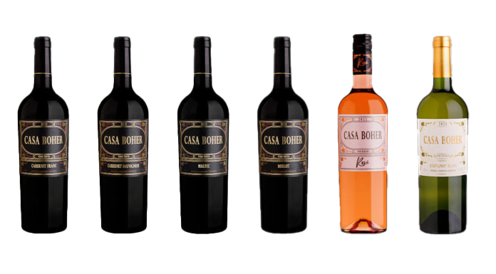

Bienvenido a la pagina de informacion sobre los vinos de la bodega Casa Boher.
Bienvenido a nuestra página dedicada a la Bodega Casa Boher, un verdadero tesoro en el mundo del vino. Permítenos llevarte a un viaje a través de la historia, la pasión y el arte que se encuentran detrás de esta prestigiosa bodega. Descubre los excepcionales vinos de Casa Boher. Con viñedos ubicados en la región de Luján de Cuyo, Argentina, Casa Boher ofrece una amplia variedad de vinos de calidad superior. Desde elegantes espumantes hasta potentes tintos, cada botella refleja la dedicación y el cuidado en su elaboración. Disfruta de visitas guiadas y degustaciones en su hermosa bodega. Sumérgete en el mundo de Casa Boher y descubre los sabores únicos de sus vinos. ¡Experimenta la pasión de Casa Boher en cada copa!
